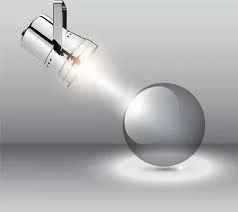

Благодійна організація «Благодійний фонд «Україно рідна» неприбуткова організація заснована Арсеном Карапетяном та Оксаною Обертинською, виросла з волонтерської ініціативи для допомоги громадянам України, які через агресію Росії потрапили в скрутне становище та нашим відчайдушним, мужнім та відважним Захисникам, що безстрашно обороняють державу.
Даний неурядовий проект створено із залученням цивільних медиків та волонтерів до надання медичної допомоги в зоні проведення бойових дій у війні Росії проти України в окремих районах Київської, Донецької та Луганської областей, який реалізує Благодійна організація «Благодійний фонд «Україно рідна» на підставі меморандуму про співпрацю і партнерство між громадською орнанізацією «Агенція сталого розвитку громадян» та Благодійного фонду «Перший добровільний мобільний шпиталь імені Миколи Пирогова». Сьогодні це другий медичний проект, що працює в зоні проведення бойових дій відповідно до вимог українського законодавства про благодійність та волонтерську діяльність в Україні.
Ми віримо, що наш досвід сполучення ентузіазму і гнучкості волонтерського руху з системністю та стратегічністю державницьких підходів перетворює Благодійну організацію «Благодійний фонд «Україно рідна» на унікальний проект, який стане цеглинкою, а далі і фундаментом майбутньої доступної та високоефективної мобільної медицини в Україні.
БережітьУкраїну! Врятуйте світ!
Зараз українці борються з найбільшим викликом ХХІ століття. Демократія чи тиранія, процвітання чи нескінченна корупція та стагнація, воля чи рабство. Це не просто конфлікт, це бій сучасного цивілізованого світу проти агресивного середньовіччя. Якщо Україна не вистоїть, то вся цивілізація буде відкинута на десятиліття назад. Ми повинні зупинити агресію, російсько – українську війну. У нас немає шансів схибити!
І ви можете допомогти нам коштами та підтримкою, щоб здолати цю чуму, агресію лютого ворога, цю війну!
ЗРОБІТЬ ПОЖЕРТВУ СЬОГОДНІ
Хто ми і що робимо
Благодійна організація «Благодійний фонд «Україно рідна» завжди поруч з українськими захисниками, а іноді і попереду них, ніби янголи. Фронт –це не лише передова російсько – української війни. Це сукупність дій на території, де точиться війна за Україну. Це шпиталі, це полігони, це засоби масової інформації, це склади, це волонтери, це навчання, це реабілітація, це підтримка родин військових…
Місія Благодійної організації «Благодійний фонд «Україно рідна» - об’єднання прогресивної спільноти, талановитої, небайдужої молоді, патріотично налаштованих українців і закордонних партнерів для системної роботи на благо нашої неньки України та її безцінного народу, з метою разом підтримувати здоров’я захисників, іх родин, населення вцілому, підтримувати наукові та освітні проекти реалізації надання даної допомоги, разом будувати оновлену мирну та квітучу державу державу Україна!
Одним з важливих напрямків є надання медичної допомоги в зоні проведення бойових дій у війні Росії проти України в окремих районах Київської, Донецької та Луганської областей є підтримка тих, хто зі зброєю у руках боронив і продовжує боронити Україну від військ агресора. Команда Фонду переконана, що ветерани російсько-української війни мають стати успішними – локомотивами розвитку суспільства. Допомога у реабілітації та підтримки і розвитку власних бізнес-амбіцій наших захисників.
Ми були із захисниками України у найгарячіших куточках фронту. Ми з ними, коли вони приїздять на ротацію чи навчання. Ми поруч, коли вони повертаються до мирного життя. Благодійна організація «Благодійний фонд «Україно рідна» працює, щоб захисники були здоровими і ефективно виконували свою роботу захищаючи державу. Наша зброя – фахівці і досвід. А ще мільйони доброчинців, що довірили нам свої кошти і дозволили допомагати захисникам і їх родинам від їхнього імені. Тому наша найбільша сила – люди, що вірять в українське військо і готові триматися стільки, скільки буде потрібно.
РЕЗУЛЬТАТИВНІСТЬ
Ми націлені на отримання найвищих результатів щодо реалізації місії БО БФ «УКРАЇНО РІДНА».
ПРОЗОРІСТЬ
З перших кроків і до кінцевого результату та повного виконання наших проектів і задумів разом з Вами прозоро та вичерпно працюємо, залучаючи широку громадськість та представників ЗМІ.

ПРОФЕСІОНАЛІЗМ
Конструктивність та відповідальність до всіх елементів нашої діяльності, залучаючи до нашої команди найкращих та грамотних фахівців.

ЕФЕКТИВНІСТЬ
Кожен наш проект, задум наполегливо націлений на отримання максимального результату від докладених спільних зусиль і ресурсів разом з Вами.

ЧЕСНІСТЬ
Прозорість і відкритість спільної з Вами праці для спільної справи, завжди відкриті до спілкування і чесні перед собою та суспільством.

КОМАНДНІСТЬ
Працюючи разом як єдина команда однодумців для досягнення спільної мети та виконання нашої місії.

Підтримати шпиталь
Для переказів у національній валюті:
| Одержувач: |
Благодійна організація «БФ «Україно рідна» |
| IBAN: |
UA413806340000026000253207001 |
| Банк отримувача: |
ПуАТ «КБ«АКОРДБАНК»
місто Київ, 04136, вул. Стеценка, 6 |
| Код ЄДРПОУ: |
41292196 |
Для переказів в іноземній валюті:
DETAILS of “CB “ACCORDBANK” PuJSC EUR:
| Beneficiary: |
CO CF UKRAINE NATIVE |
| IBAN: |
UA413806340000026000253207001 |
| Beneficiary’s bank: |
ACCT. 0105442396
PuJSC "CB "ACCORDBANK"
Stetsenka Str. 6, Kyiv, Ukraine
|
| SWIFT code: |
ACDCUAUK |
Для переказів в іноземній валюті:
DETAILS of “CB “ACCORDBANK” PuJSC USD:
| Beneficiary: |
CO CF UKRAINE NATIVE |
| IBAN: |
UA413806340000026000253207001 |
| Beneficiary’s bank: |
PuJSC "CB "ACCORDBANK"
Stetsenka Str. 6, Kyiv, Ukraine
|
| SWIFT code: |
ACDCUAUK |
Для переказів на банківську картку:
| Номер картки: |
5167 6196 0009 9027 |
| Назва банку: |
АКОРДБАНК |